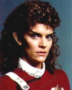

Saavik |
|
|||||
|  |
Dati personali
Nata nel 2264.
Ufficiale
vulcaniana della
Flotta Stellare.
Durante
l'addestramento sull'Enterprise, ha come supervisore
il Capitano Spock. Al termine dell'addestramento, viene
assegnata alla
Grissom per studiare
il pianeta
Genesis.
Assegnamenti
| 2285 | USS Enterprise | Tenente J.G. |
| 2285 | USS Grissom | Tenente J.G. |
| 2286 | Promossa Tenente. |